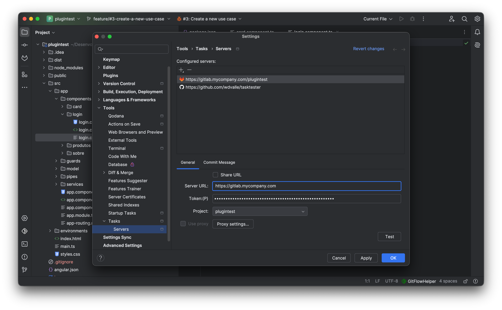
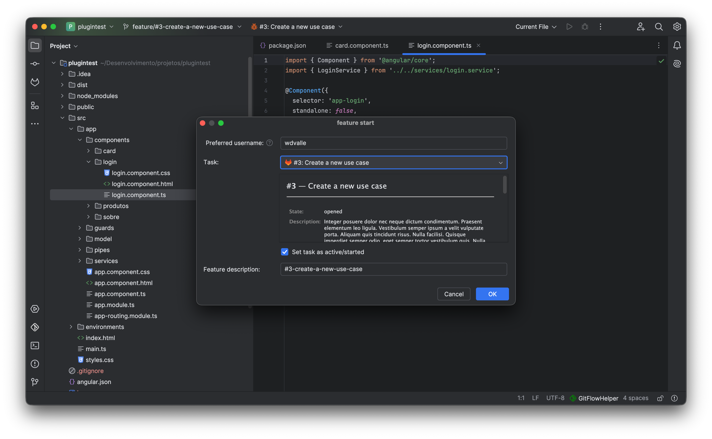

Bridge the gap between task management, Git branches, and automated builds. Connect Jira, GitHub, GitLab, Redmine, and Jenkins directly to your IDE.
GitFlow Helper taps natively into IntelliJ Platform's Task Management framework to fetch your assigned issues and synchronize ticket states automatically.
Seamlessly fetch assigned issues across Scrum and Kanban boards. Generates branches like feature/JRA-1024-jwt-auth and transitions ticket status to In Progress.
Connect to public and private GitHub repositories. Automatically creates branches matching GitHub issue numbers and sanitizes issue descriptions into slugified branch names.
Full support for self-hosted and cloud GitLab instances. Finish features by directly opening a Merge Request on GitLab using native Git push options (-o merge_request.create).
Full connection to Redmine project servers. Pulls assigned tickets, creates branches, updates status, and closes the ticket when the branch is finished.

Save up to 5 minutes of context-switching on every single feature branch.
Selecting a task transforms [PROJ-452] Implement OAuth2 token refresh flow automatically into the clean, valid branch name: feature/PROJ-452-implement-oauth2-token-refresh-flow.
Upon branch creation, GitFlow Helper notifies your issue server, assigning the ticket to your user account and transitioning the status directly to In Progress.
When completing the feature via Feature Finish, an option is available to automatically mark the ticket as Resolved or Closed on the remote tracker.

Trigger remote pipeline jobs and observe execution progress right inside your IDE.
Configure your Jenkins pipeline URL and job token once per repository. GitFlow Helper will handle the rest:
Work with modular microservice architectures and mono-repos with total confidence.
Each repository in your IntelliJ project maintains its own isolated Git Flow configuration, branch prefixes, and current operational states.
All log messages output into the Logs tool window include the repository name prefix (e.g. [backend-service], [frontend-ui]) so you immediately know which repo executed each command.
Easily toggle between repositories in the Flow graph tab and Tree View dialog with a dedicated repository selector dropdown.